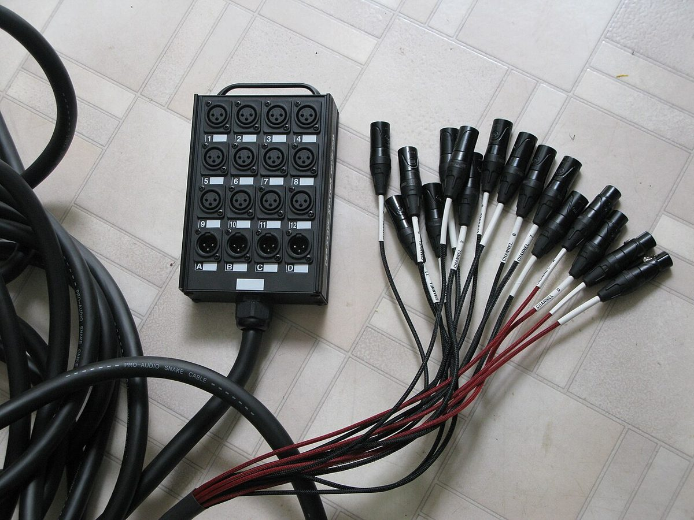
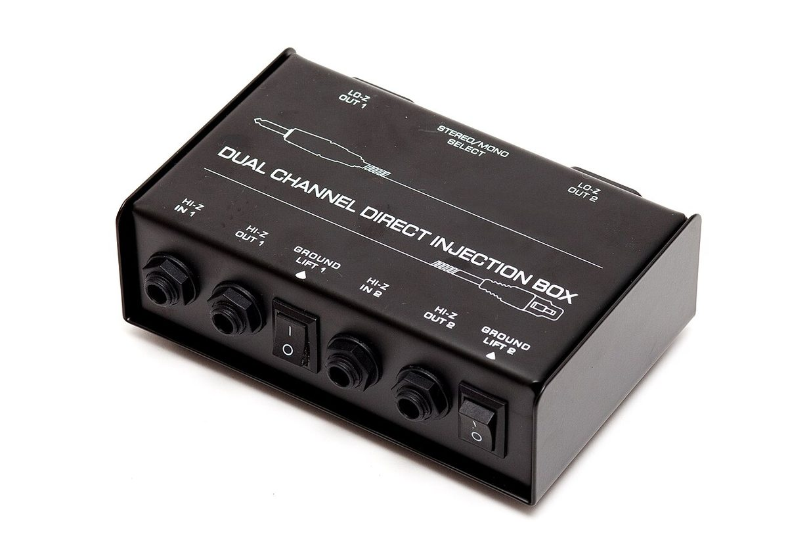
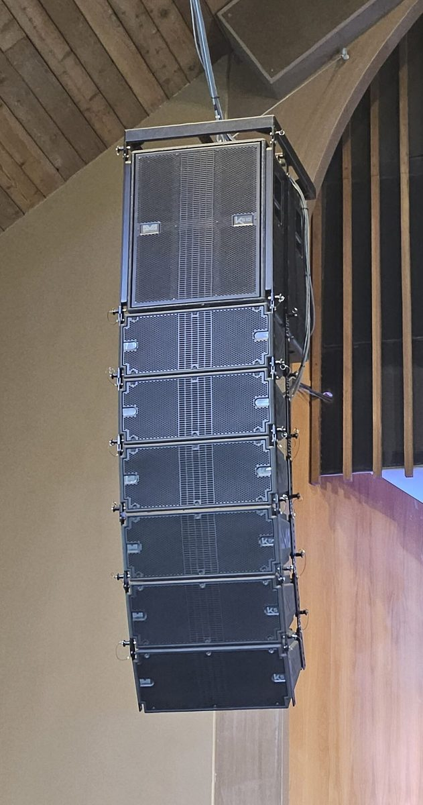

XLR (3-pin balanced): Mic lines & snake returns. Latch locks so cords stay put.
TRS ¼″ (Tip · Ring · Sleeve): Two rings. Balanced line level or stereo headphones.
TS ¼″ (Tip · Sleeve): One ring. Unbalanced short instrument runs (guitar → DI).
NL4 Speakon: Twist-lock high-current speaker cable from amp to passive cabinet.
Bench test · Can a fader repair a clipped peak?
Select the 196 Hz calibration sine, set the −18 dBFS target, then listen. Read the three peak meters from left to right. Predict the master reading if you lower only the channel fader by 6 dB. Move it and check.
Now overload the preamp and lower the channel fader until the master reads about −18 dBFS again. Compare the sound and the shape of the peaks. Which control brings the rounded sine peaks back?
Live Sound Essentials: Capture → Carry → Control → Amplify → Deliver
⛓ The Chain Is Only as Strong as Its First Link
Every sound system follows the same chain: capture → carry → control → amplify → deliver. Fix problems at the earliest stage possible—mic placement beats EQ, and clean preamp gain beats riding the fader.
🎚 Gain Staging, −18 dBFS & Unity
Set preamp gain (trim) so average musical peaks land around −18 dBFS (leaving 18 dB of clean headroom below 0 dBFS digital clip). Leave channel and master faders near unity (0 dB).
⚡ +48 V Phantom Power & Safety
Condenser microphones and active DI boxes require +48 V DC over balanced XLR pins 2 and 3. Always mute the channel before engaging or disengaging +48 V, and keep it off for unbalanced adapters or vintage ribbon mics.
📣 Why Clipping Cannot Be Undone
When voltage exceeds a preamp's or converter's limit (0 dBFS), wave crests flatten into square-cornered waves full of harsh odd harmonics. Once clipped at the preamp, lowering the channel fader only makes distorted audio quieter.
🎭 Musical Theatre Stage Practice
In productions like The Pirates of Penzance or Newsies, wireless receivers and floor boundary mics plug into the stage box snake, feed the console preamps, and route through channel faders and DCA groups to the mains.
Each stage above corresponds to physical equipment on stage and at front-of-house. Click any photograph to enlarge it for class discussion.

Stage box and snakeEvery mic on stage plugs into the stage box. One thick multicore cable (the “snake”) carries all channels cleanly to the mixer.VK1LW · CC BY-SA 3.0 · Wikimedia Commons ↗

DI boxA direct-injection box turns a keyboard's or bass guitar's unbalanced TS signal into a balanced mic-level XLR feed for the snake.Ashley Pomeroy · CC BY-SA 3.0 · Wikimedia Commons ↗Digital consoleA Yamaha M7CL. The signal chain matches analog desks—gain, EQ, dynamics, fader, master—inside one digital workflow.beeki · CC0 · Wikimedia Commons ↗Monitor mix positionA second engineer mixes separate pre-fader feeds for stage wedges and in-ear monitors so performers hear clearly.Sonicvibesolutions · CC BY 4.0 · Wikimedia Commons ↗

Line arrayMultiple cabinets hung in a vertical J-curve aim high-frequency energy toward back rows while keeping front rows comfortable.Epolk · CC BY-SA 4.0 · Wikimedia Commons ↗